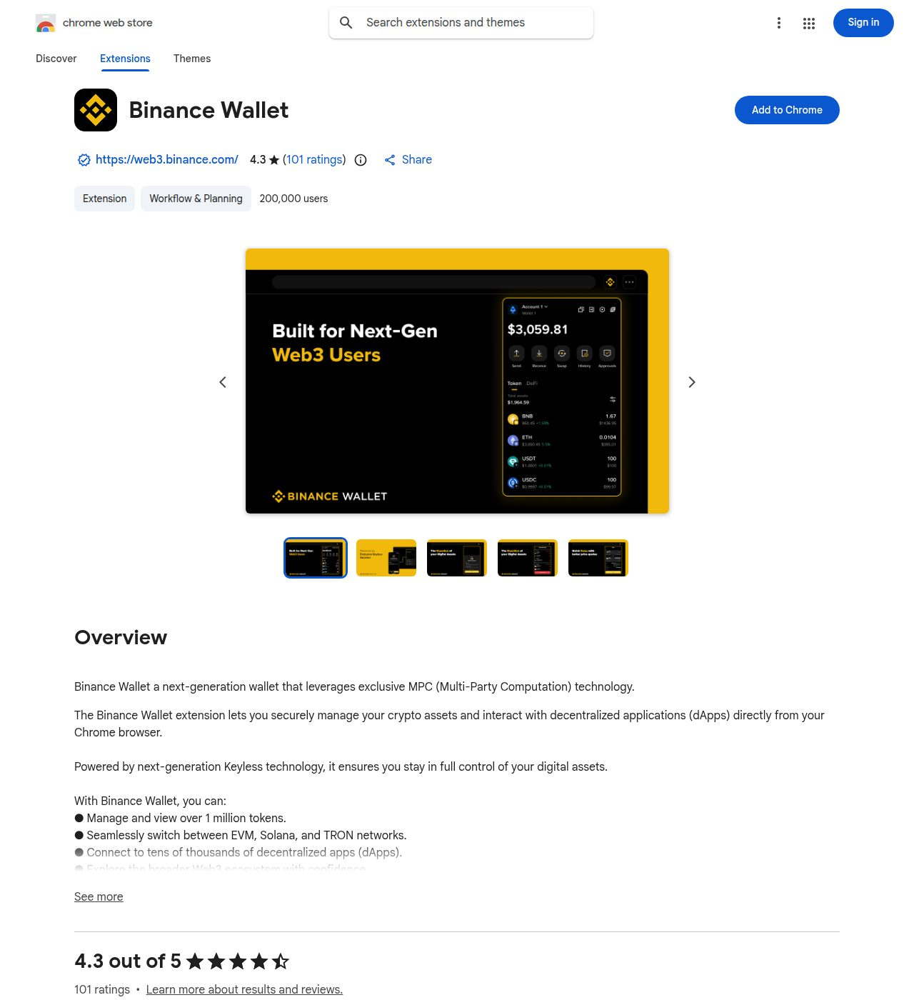

Binance Wallet is Binance's Web3 wallet, available as a browser extension, an app and on the web. It's a place to hold and move crypto, not a way to earn: nothing in it pays you for time. Its Chrome Web Store listing describes a self-custodial wallet using MPC (multi-party computation) 'keyless' technology, with 200,000 users, a 4.3 rating from 101 ratings and an update dated 30 October 2026. Binance's own page claims 30M+ wallet users, 30+ networks and $20B+ in monthly volume, but states no fees, and never explains the custody model itself. Several faucet and PTC sites let you cash out to Binance, so you may meet it that way. It's a reasonable, mainstream tool, with the usual cautions about what you approve and where your recovery backup lives.
Quick Facts
How we reviewed it
We have not been paid by Binance Wallet and this page has no referral link. Everything below comes from Binance Wallet's official about page and its Chrome Web Store listing, both read on 2 November 2026. The in-depth third-party reviews we found weren't accessible to us, so we haven't relied on them, checked on 2 November 2026. We have not signed up or withdrawn, so this review carries no score and no earnings claims. The screenshots are our own captures of the public pages.
What is Binance Wallet?
Binance Wallet (web3.binance.com) bills itself as "one wallet, everything on-chain": memes, tokenised stocks, prediction markets, perpetual futures, a portfolio view, referral rewards and an "agentic" build section, across an app, web, an AI agent, an extension and an API. The Chrome extension lets you manage tokens on EVM chains, Solana and TRON and connect to decentralised apps from the browser. The listing's developer is Binance, linked to web3.binance.com.

What the Listings Say
- Custody: the store description calls it "next-generation Keyless technology" that keeps you "in full control of your digital assets", and the page says it uses MPC. The official about page doesn't state the custody model at all.
- Scale claims: Binance says 30M+ wallet users, 30+ networks and $20B+ monthly volume. Those are its own figures. The extension has about 200,000 users and 101 ratings at 4.3, which is the independent, checkable number.
- Version: 1.28.0, updated 30 October 2026, with support for 11 languages.
- Privacy disclosure: the developer declares collecting "user activity", and says it doesn't sell data to third parties outside approved uses, or use it for creditworthiness or lending. The listing shows no permissions list and no written user reviews.
What We Couldn't Verify
- Fees: none are listed on the official page we read, so check swap and network fees in the app before trading.
- How recovery works for a keyless wallet and where your backup is stored. A third-party review we couldn't access reportedly says the keyless wallet relies on an encrypted backup and that hardware wallets aren't supported. Treat that as unconfirmed.
- Regional availability and the terms. The official page links no readable terms.
- Any audit of the wallet software.
Sensible Habits
- Install only from the official store listing (the developer link should be web3.binance.com). Search results are full of look-alike "Binance Wallet extension" pages.
- Read every approval. Connecting to a dApp and signing a token approval is how most wallet losses happen.
- Back up your recovery method before you put real money in.
- Don't chase the speculative tools (memes, perpetuals, prediction markets) on a micro-earning budget.
For how wallets work generally, see our wallet guide, and for micro-payment routes the FaucetPay guide. Compare with Cwallet and Pionex, where the Trustpilot records are much worse.
Pros and Cons
Pros
- Mainstream, with a named, large developer
- Self-custodial MPC model advertised
- 4.3 rating from 101 ratings, 200,000 extension users
- Frequent updates
- Supports EVM, Solana and TRON networks
Cons
- Not an earner
- Official page states no fees and no custody details
- Recovery depends on a backup you must manage
- Speculative tools in the same app
- Look-alike extensions and pages are common
Tips if You Try It
- Check the developer link before installing.
- Read each approval before signing.
- Store your backup safely and test recovery with a small amount.
- Use it to receive payouts, then keep only what you need.
If you only need micro-payments, our FaucetPay review covers the simpler route.
Final Verdict
Verdict: a mainstream wallet, not a way to earn
Binance Wallet is a credible, widely used Web3 wallet extension with decent store ratings, but its official page doesn't say what it charges or how custody works, and it sits next to speculative products. It can receive your micro-payouts well enough. It won't earn you anything, and you must manage approvals and recovery yourself.
Where to Put Your Time Instead
These are our top-rated platforms that need no deposit. Each links to our full review.
- SnazzyPTC: our top pick, a no-deposit PTC paying in BUCK on Solana.
- Prolific: paid academic studies and surveys.
- Respondent: longer, better-paid research interviews.
- Swagbucks and Freecash: offer and survey sites with low cash-out limits.
- TopCashback and Brave: earn from shopping you already do and from browsing.
- FaucetCrypto and FireFaucet: daily faucet claims to a free FaucetPay wallet.
- Honeygain: passive bandwidth sharing.
New to all this? Start with the best micro-task sites of 2026.
Sources
Checked on 2 November 2026.
Related Reviews
Was this review helpful?